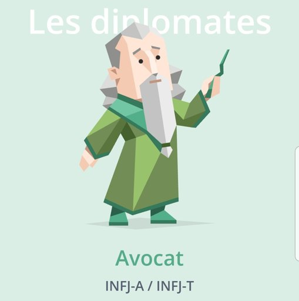

| Accueil | A propos | Parcours d'Études | Projet Implémentation d’un besoin client | Projet Recueil de Besoin | Diplomes |
Je m’appelle Manon Glaude, j'ai 20 ans, et je suis étudiante française en première année de BUT Informatique à l’IUT de Villetaneuse (Ile-de-France, France).
Ce site internet a pour objectif de me présenter, et de vous faire voyager dans mon univers !
|
Qualité
Je préfère agir correctement, et après réflexion, pour obtenir un travail solide, plutôt que de me précipiter, et d’avoir des résultats aux bases fragiles. |
Professionnalisme
Le professionnalisme favorise la recherche de résultats intéressants, et permet de garder un certain cadre |
Organisation
L’organisation est la base de tout projet. Elle permet de prévoir un idéal dont on va tenter de s’approcher, et de distinguer ce qui est réaliste de ce qui ne l’est pas. |
|
Humilité
Être humble aide à se rendre compte de ses propres limites, et de s’améliorer perpétuellement en s’inspirant des autres. |
Respect
Sans respect des autres et de soi-même, rien de sain ou de constructif ne peut naître. Respecter, c’est témoigner que l’autre est un être humain avec des sentiments, et une personne de grande valeur. |
Justice
Agir avec justice revient à reconnaître et respecter les droits de tout un chacun. |
|
Écoute
J’aime écouter les autres. J’en apprends beaucoup ! |
Capacité à la remise en question
"Tout ce que je sais, c’est que je ne sais rien, tandis que les autres croient savoir ce qu’ils ne savent pas.", Socrate |

Avocate en 2023
2020: Aventurier, 2018:Médiateur |
J'aime
|
| Appliquée | Autonome |
| Créative | Sérieuse |